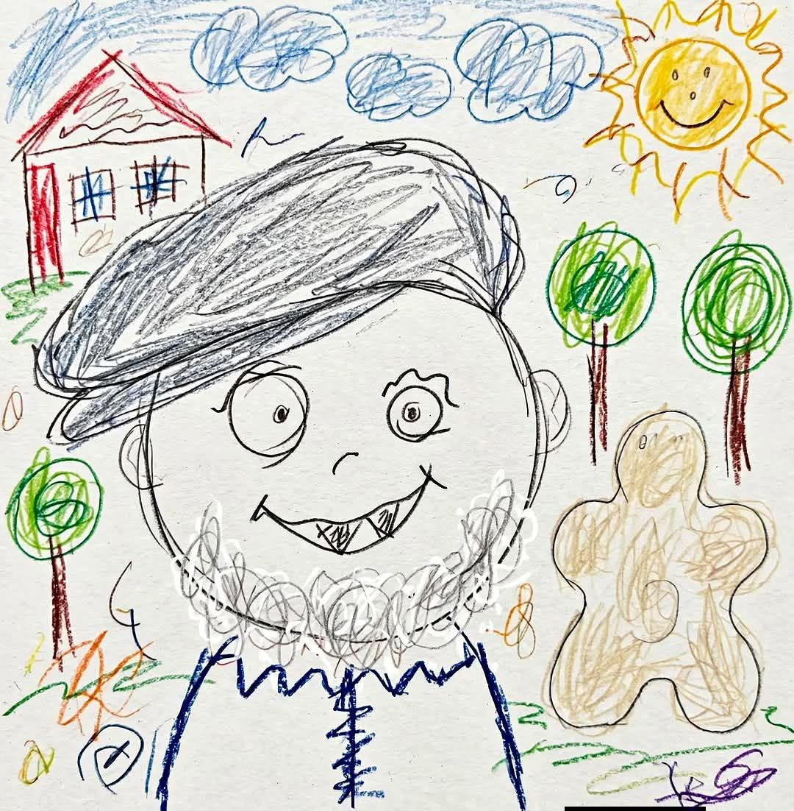

C'est tout moi, ça !
Je suis fait d'ombre
et de lumière,
De grands élans,
de pas hésitants ;
Je ris parfois
pour mieux me taire,
Et je cache
mes tourments.
Je tends la main,
je garde espoir,
Même lorsque
le ciel se voile ;
Je cherche encore
un peu à voir,
Au fond des plus
lointaines étoiles.
Je tombe,
puis je me relève,
Avec mes doutes
et ma foi ;
Je poursuis toujours
un même rêve...
C'est tout moi, ça !
Je n'ai ni masque,
ni couronne,
Seulement un cœur
qui apprend ;
Chaque blessure
me façonne,
Chaque sourire
me reprend.
Si l'on me demande
qui je suis,
Je répondrai
calmement :
Un homme qui avance
dans la nuit,
En protégeant la paix
de son âme.
Je ne suis pas parfait,
loin de là,
Mais je demeure
fidèle à ma voie ;
Avec mes faiblesses
et mes combats...
C'est tout moi, ça !
Djamel Metref
At Yenni le 15 Juillet 2026

← Tous les poèmes